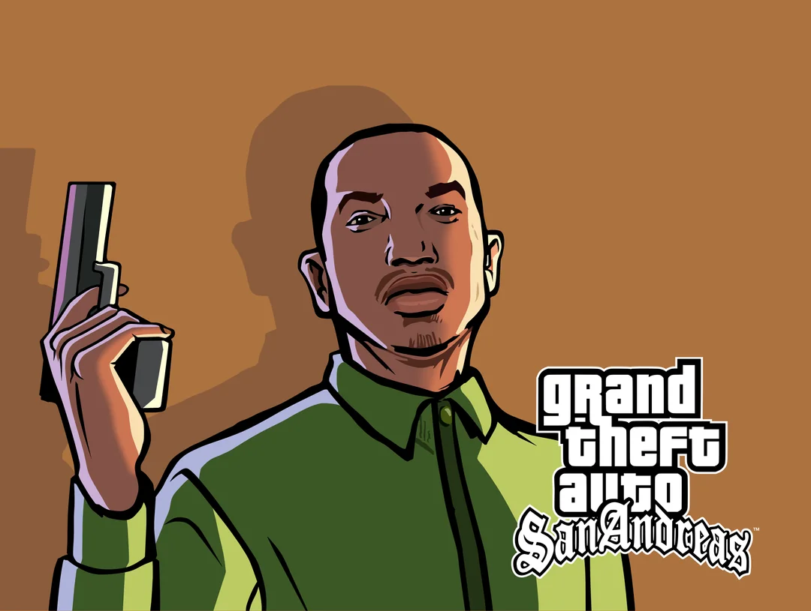
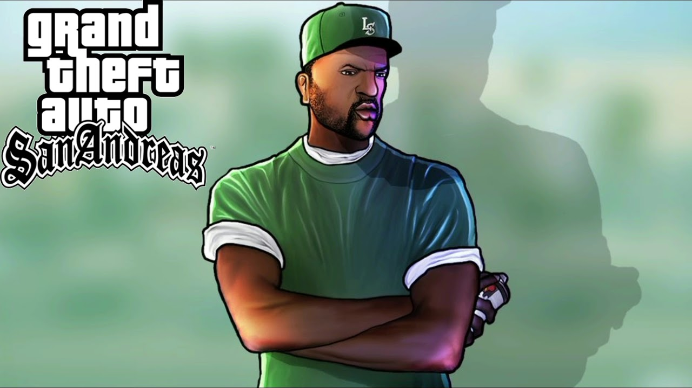

GTA SAN ANDREAS
| Пригодницька відеогра у жанрі action-adventure, розроблена Rockstar North та видана компанією Rockstar Games в 2004 році. Це сьома за рахунком і третя тривимірна гра у франшизі Grand Theft Auto. Для консолі PlayStation 2 гра була випущена 26 жовтня 2004 року в Північній Америці та 29 жовтня 2004 року в Європа і Австралія. У варіантах для Windows і Xbox гра з'явилася 7 червня 2005 року в Північній Америці та 10 червня 2005 року в Європа; версії гри для Xbox 360 і PlayStation 3 було видано у 2008 та 2012 роках відповідно; у 2013-2014 роках відбувся випуск версій гри для мобільних ОС (iOS, Android, Windows Phone і Fire OS). 11 листопада 2021 року відбувся реліз збірки ремастерів Grand Theft Auto: The Trilogy — The Definitive Edition, до якої увійшла оновлена версія GTA: San Andreas. |
| Герої та злодії | |
|

Головний герой відеогри «Grand Theft Auto: San Andreas». Один із лідерів вуличної банди «Grove Street Families» у Лос-Сантосі. Є другий чорношкірий головний герой у серії ігор Grand Theft Auto. Персонаж отримав визнання критиків, похваливши його складність, відсутність стереотипів і почуття совісті, і вважається одним із найкращих персонажів відеоігор усіх часів. |

Райдер народився в Лос-Сантосі, швидше за все в Гантоні через його близькі стосунки зі Світом і Карлом Джонсонами. У невідомий момент Райдер приєднався до вуличної банди Grove Street Families, зрештою піднявшись по службових сходах банди, поки не став одним із найближчих союзників Світа, чому допоміг відхід Карла Джонсона в 1987 році після смерті його брата. |

Біг Смоук через деякий час після від’їзду Карла переїхав до Айдлвуда після того, як купив будинок за гроші, які, як він стверджує, залишила йому за заповітом його тітка. Сім'ї Гроув-стріт, однак, почали втрачати вплив і статус серед міських банд, помітивши, що Балласи, які контролювали Айдлвуд, продавали наркотики, щоб посилити свій вплив. |

Світ є лідером банди Grove Street Families, яка базується в Гантоні, Лос-Сантос. Він є старшою дитиною Беверлі Джонсон і старшим братом Карла, Кендла і Браяна. У Світа також показано, що в двох місіях є неназвана дівчина. Світ народився в Лос-Сантосі в родині Беверлі Джонсон і неназваного батька. Пізніше він був присутній при народженні трьох своїх молодших братів і сестер, Карла, Кендла та Браяна. після смерті його брата. |